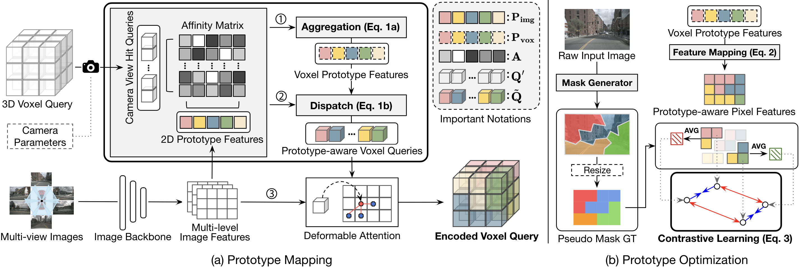
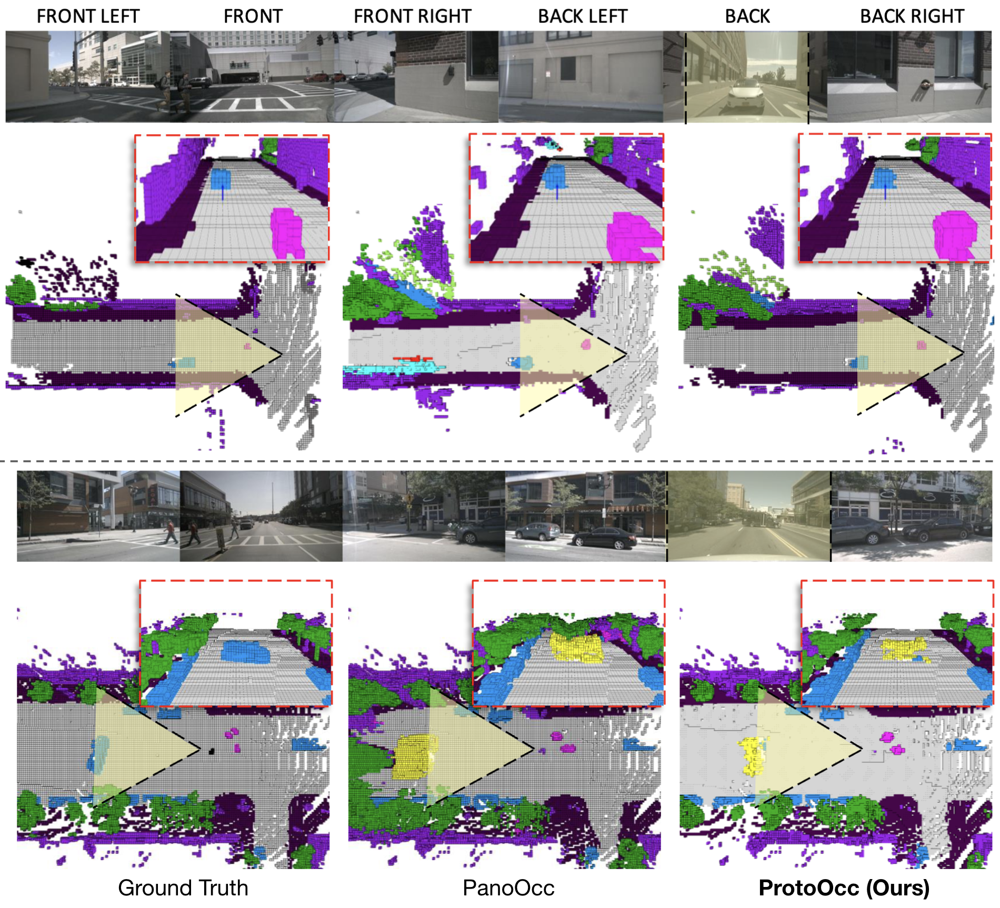
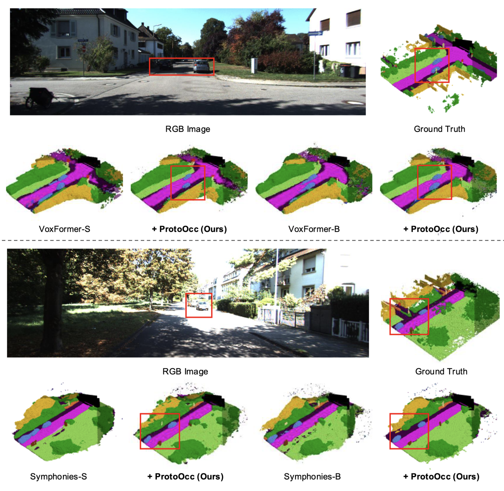

3D Occupancy Prediction with Low-Resolution Queries via Prototype-aware View Transformation
* Equal Contributions, † Corresponding Authors
Abstract
The resolution of voxel queries significantly influences the quality of view transformation in camera-based 3D occupancy prediction. However, computational constraints and the practical necessity for real-time deployment require smaller query resolutions, which inevitably leads to an information loss. Therefore, it is essential to encode and preserve rich visual details within limited query sizes while ensuring a comprehensive representation of 3D occupancy. To this end, we introduce ProtoOcc, a novel occupancy network that leverages prototypes of clustered image segments in view transformation to enhance low-resolution context. In particular, the mapping of 2D prototypes onto 3D voxel queries encodes high-level visual geometries and complements the loss of spatial information from reduced query resolutions. Additionally, we design a multi-perspective decoding strategy to efficiently disentangle the densely compressed visual cues into a high-dimensional 3D occupancy scene. Experimental results on both Occ3D and SemanticKITTI benchmarks demonstrate the effectiveness of the proposed method, showing clear improvements over the baselines. More importantly, ProtoOcc achieves competitive performance against the baselines even with 75% reduced voxel resolution.
How does ProtoOcc work?
(a) Prototype Mapping: In the Prototype Mapping stage, we fully exploit the hierarchies of 2D image features via a clustering method to map 2D prototype representations onto 3D voxel query. (b) Prototype Optimization: Contrastive learning on the prototype features based on the pseudo ground truth masks enhances the discrimination between the prototypes for better feature learning.
Quantitative Results
(a) Occ3D-nuScenes: We highlight the best and runner-up results for each category in bold and plain, respectively. Not only does ProtoOcc stand out in its category, but also by comparing the results within the same color marks, it is apparent that ProtoOcc can overcome query deficiencies, performing on par even with higher-resolution counterparts. (b) SemanticKITTI: ProtoOcc can also bring benefits in scene understanding as a plug-and-play. All the smaller-resolution models surpass its larger variant when our ProtoOcc is combined.
Qualitative Results
1. Occ3D-nuScenes 2. SemanticKITTI 